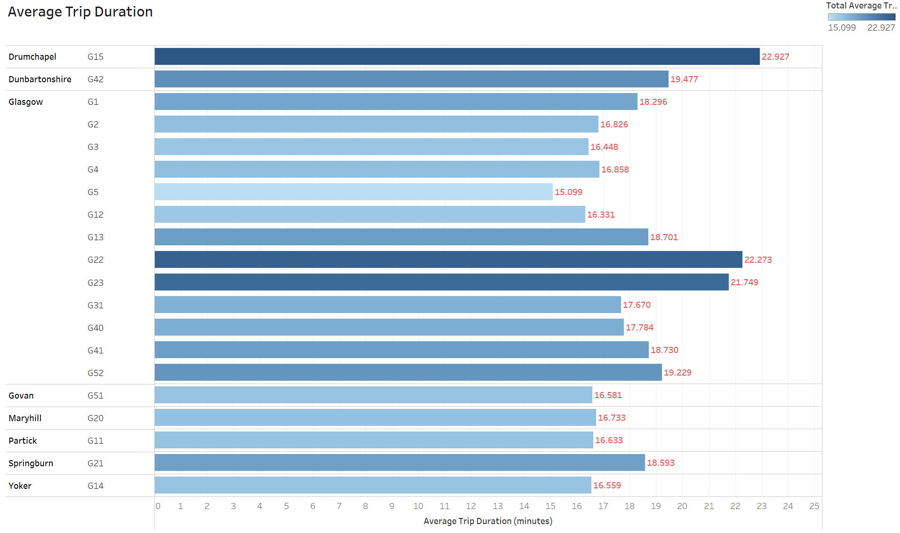
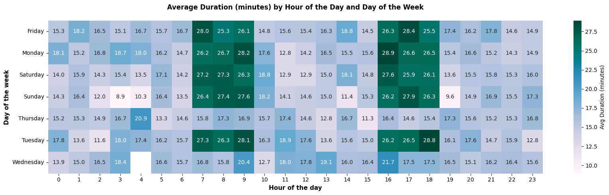
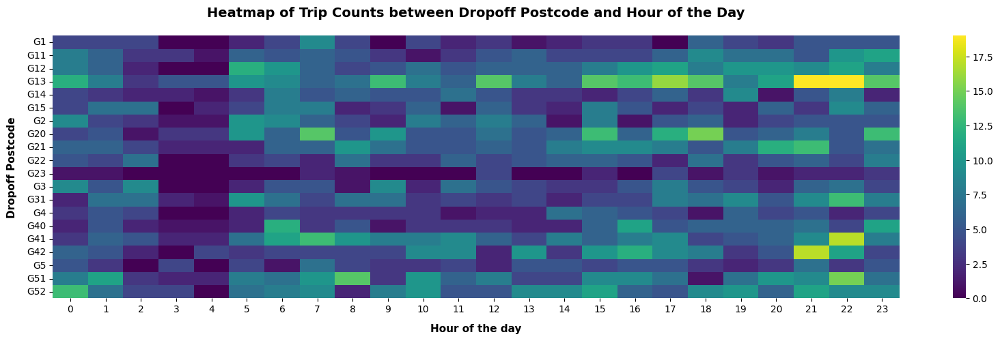
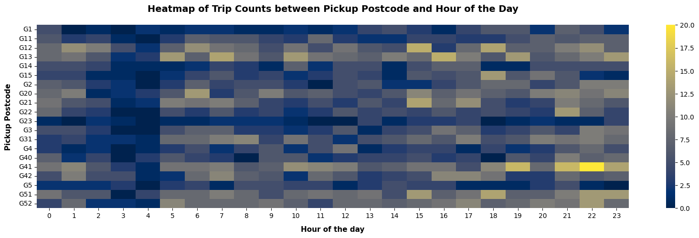
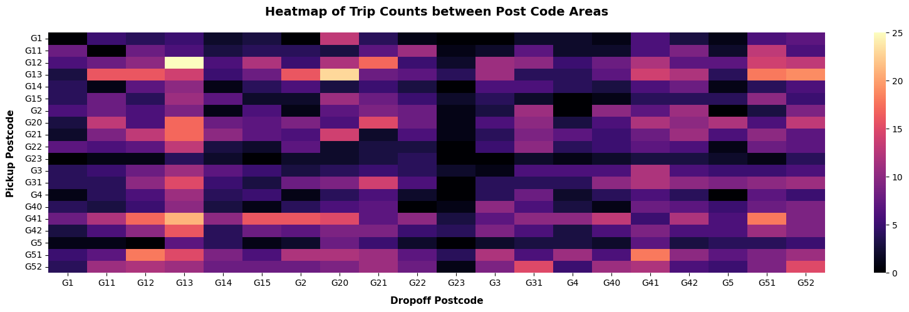
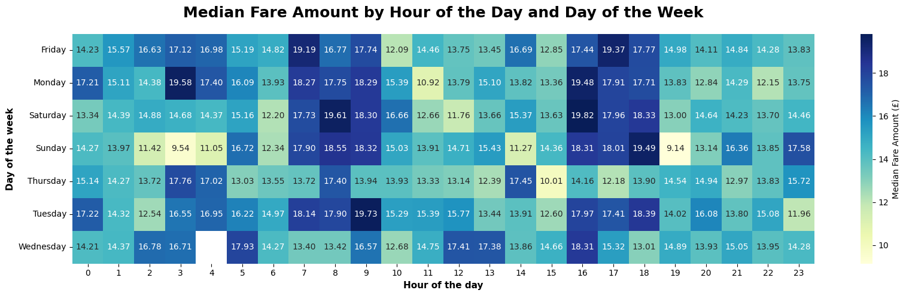
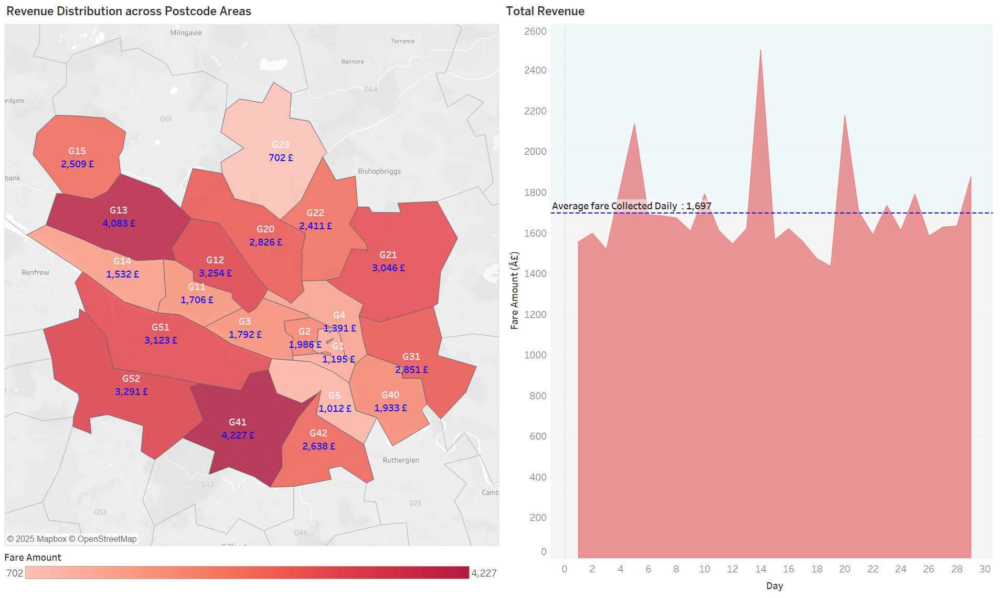
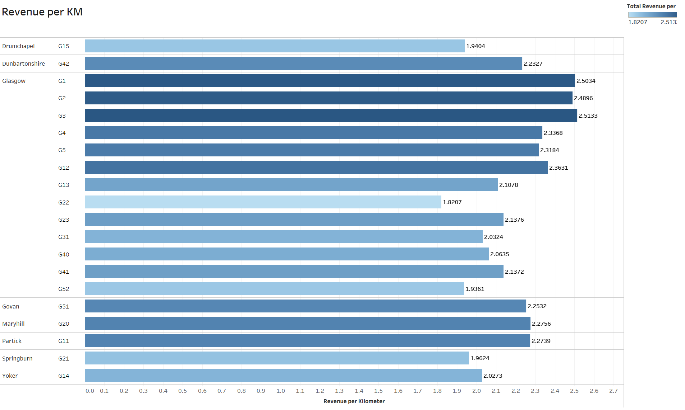
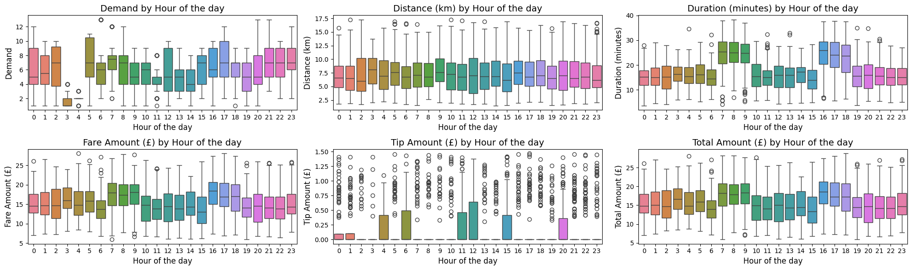
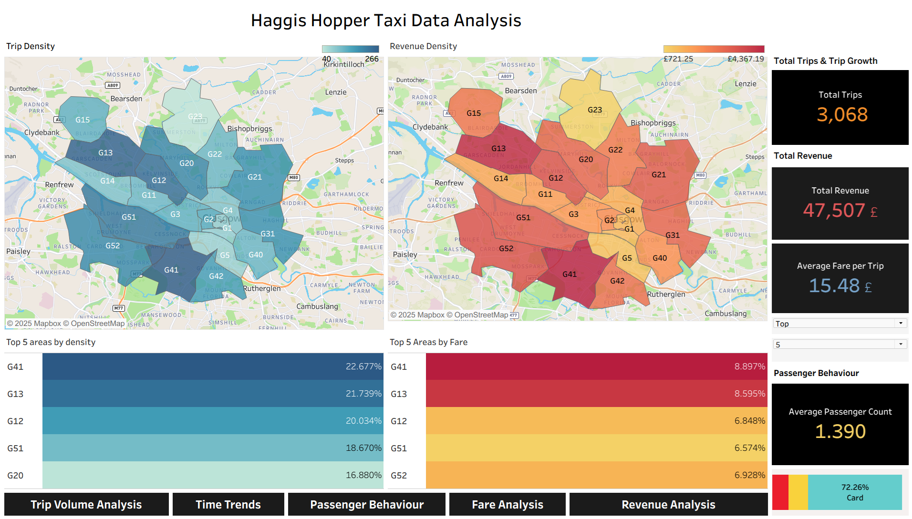

Haggis Hopper Taxi Business Insights - Case Study
Introduction
The case study examines how Haggis Hoppers, a growing, sustainability-focused Glasgow taxi company, can use data analytics and predictive modelling to better manage fluctuating urban transport demand and improve operational efficiency. It aims to leverage historical trip, weather, event, and traffic data to optimise fleet allocation, maintenance, and pricing so the business can scale sustainably while enhancing customer satisfaction and supporting city-wide sustainability goals.
Expected Outcome
Requirement is a comprehensive analysis of historical trip logs and its time series analysis of demand:
- Propose data-driven strategies to optimize fleet allocation, enhance customer service, and improve overall operational efficiency.
- Operational Efficiency: Identify opportunities for route optimization, reduced idle time, and improved fuel efficiency through temporal and geospatial analysis.
- Customer Experience: Analyze customer behavior patterns to inform potential enhancements in ride booking, personalization, and service availability.
- Strategic Business Opportunities: Highlight areas for potential service expansion and technological innovation based on demand patterns and underserved locations.
Approach
Exploratory Data Analysis (EDA)
The foundational step in Haggis Hoppers' data-driven journey is to undertake a comprehensive Exploratory Data Analysis (EDA) of its trip log data. This initial phase is crucial for several reasons:
• Understanding Data Characteristics: EDA will allow Haggis Hoppers to gain a deep understanding of the underlying patterns, anomalies, trends, and correlations within its data. This includes analysing trip frequencies, duration, peak times, geographic hotspots of demand, and other relevant metrics.
• Identifying Operational Insights: Through EDA, the company aims to uncover insights that could lead to immediate operational improvements, such as identifying under-served areas, times of day with mismatched supply and demand, and inefficiencies in current fleet allocation practices.
• Data Quality Assessment: This phase will also serve to evaluate the quality of the collected data, identifying any inconsistencies, missing values, or outliers that may impact further analysis.
Quantitative Research and Key Analysis Areas
Conducted comprehensive quantitative analysis using advanced statistical methods and machine learning techniques to uncover patterns in taxi operations, customer behavior, and demand forecasting. The research involved extensive data preprocessing, exploratory data analysis, and predictive modeling to deliver actionable insights for business optimization.
• Geospatial Analysis
• Demand Patterns
• Descriptive Statistics
• Postcode Demand Analysis
• Demand Analysis
• Outlier Analysis
• Temporal Analysis
• Hourly Variations and Outliers in Key Taxi Metrics: Demand, Distance, Duration, Fare, Tip, and Total Amount
• Revenue & Fare Analysis
• Trip Duration Analysis
• Clustering Analysis
• Hour-Ahead Demand Forecasting
• Business Insights
Detailed Tasks
• Collected, integrated, and cleaned transport datasets from multiple sources to ensure consistency and reliability for downstream analytics.
• Conducted exploratory data analysis (EDA) using Python and SQL to uncover key trends and trip patterns, supporting business planning and operational decision-making.
• Performed geospatial analysis to identify high-demand hotspots and optimize location-based services.
• Applied clustering techniques for customer segmentation, enabling targeted strategies for user engagement and service delivery.
• Designed and implemented interactive Tableau dashboards to visualize fleet utilization, demand trends, and key operational KPIs, facilitating real-time monitoring by cross-functional teams.
• Built and deployed advanced time series forecasting models (e.g., LSTM, SARIMA) to predict customer demand, optimize resource allocation, and enable automated forecasting workflows.
• Conducted statistical analyses (e.g., correlation analysis, hypothesis testing) to identify drivers of demand fluctuations and operational inefficiencies, delivering actionable insights to stakeholders.
• Translated complex analytical findings into clear visual narratives and recommendations, enhancing communication with technical and non-technical stakeholders.
Key Findings
Showcases the discovered patterns, insights, and recommendations - covers the time series analysis results and propose data-driven strategies for optimising fleet allocation, improving customer service, and enhancing overall operational efficiency.
Time Series Analysis of Demand
The heart of this project is to perform a rigorous time series analysis on the demand data captured in the historical trip logs. This analysis is expected to reveal demand fluctuations over time, identify predictable patterns related to time of day, week, or season, and potentially uncover correlations with external factors such as weather or local events. The ultimate goal is to utilise these insights to develop a predictive model for demand forecasting, enabling Haggis Hoppers to anticipate and efficiently meet customer needs with precision.
Key Tasks
• Comprehensive time series analysis revealing demand fluctuations and patterns
• Identification of predictable patterns related to time of day, week, and seasonal variations
• Analysis of correlations with external factors (weather, local events)
• Development of predictive models for demand forecasting
Key Findings
Showcases the discovered patterns, insights, and recommendations - covers the time series analysis results and propose data-driven strategies for optimising fleet allocation, improving customer service, and enhancing overall operational efficiency.
Demand Prediction Model
Building upon the insights gained from EDA, Haggis Hoppers aims to develop a predictive model for demand forecasting. The objective here is twofold:
• Hour Ahead Prediction: The company seeks to create a model that can accurately predict taxi demand on an hour-ahead basis. Such a model would enable dynamic fleet allocation by anticipating demand surges or lulls, thereby optimising fleet utilisation and reducing customer wait times.
• Operational Efficiency: By predicting demand more accurately, Haggis Hoppers can ensure a better match between supply and demand, enhancing operational efficiency, and potentially increasing profitability through optimised resource allocation.
Outliers
Conducted comprehensive quantitative analysis using advanced statistical methods and machine learning techniques to uncover patterns in taxi operations, customer behavior, and demand forecasting. The research involved extensive data preprocessing, exploratory data analysis, and predictive modeling to deliver actionable insights for business optimization.
Detailed Tasks
• Built and deployed advanced time series forecasting models (e.g., LSTM, SARIMA) to predict customer demand, optimize resource allocation, and enable automated forecasting workflows.
Comparison of Prediction models
Quantitative Analysis Visuals
Key diagnostic plots summarizing the taxi fleet’s operational performance, demand patterns, and forecasting experiments.













Interactive Tableau Highlights
Selected Tableau dashboards that stakeholders explored during the quantitative review.